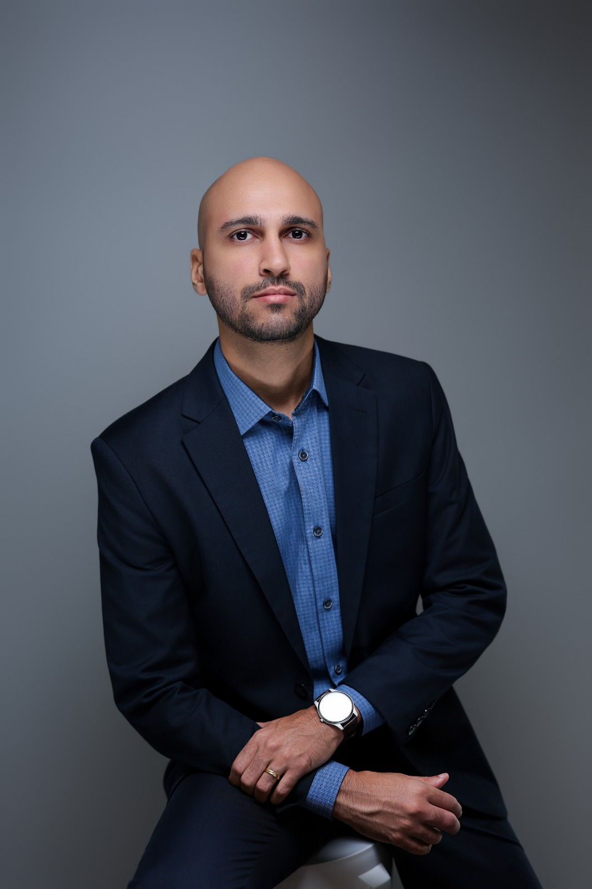

CRP 21/07010
Marco
Antonio
Psicólogo · Teresina – PI
Acredito que cada pessoa nasce com os recursos para conduzir a própria transformação. Meu papel é caminhar ao seu lado nesse processo.

CRP 21/07010
Psicólogo · Teresina – PI
Acredito que cada pessoa nasce com os recursos para conduzir a própria transformação. Meu papel é caminhar ao seu lado nesse processo.
Depoimentos
"Escuta acolhedora e método direto. Em poucos meses percebi mudanças reais na forma de lidar comigo mesmo."
"O atendimento online funcionou melhor do que eu esperava. Profissional sério e muito presente durante as sessões."
"Me ajudou a identificar padrões que eu repetia sem perceber. Hoje tenho mais clareza e leveza para encarar a vida."
Onde me encontrar
Instituto VOP – Vida Otimismo e Propósito
Av. Homero Castelo Branco, 1956
Teresina – PI
Presencial · Online (videochamada)
(86) 99489-8454 · WhatsApp